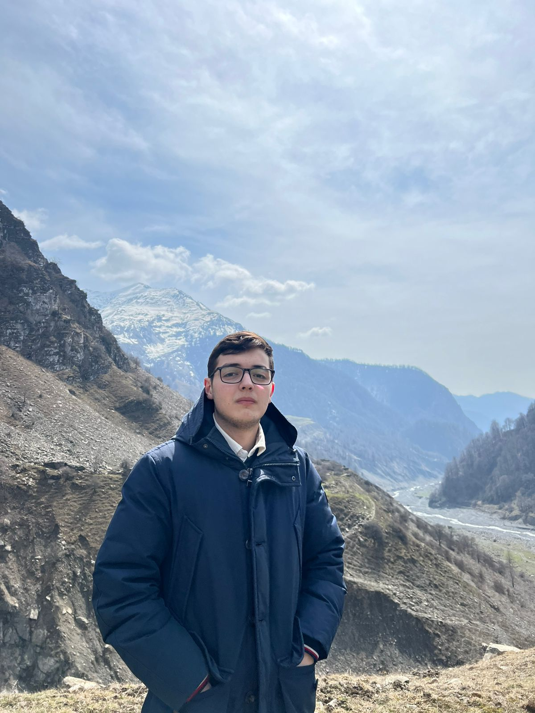

Javid Maharramli

Professional Summary
Enthusiastic Computer Science student with a strong passion for Cyber Security. Committed to continuous learning and staying updated with the latest security trends. Seeking opportunities to apply my expertise in a dynamic and challenging Cyber Security role.
Education
Zarifa Aliyeva High School Sep 2019 - Jun 2022
French Azerbaijani University Sep 2022 - Jun 2026
Languages
Azerbaijani
Turkish
English
French
Technical Skills
Programming Languages : C, C++, Python
Microsoft Office
Linux OS
Soft Skills
Problem Solving
Critical Thinking
Teamwork and Collaboration
Adaptability
Contact Me
Email : cavidmeherremli642@gmail.com
Phone : +994509998374
Location : Baku, Azerbaijan
Linkedin : My profile